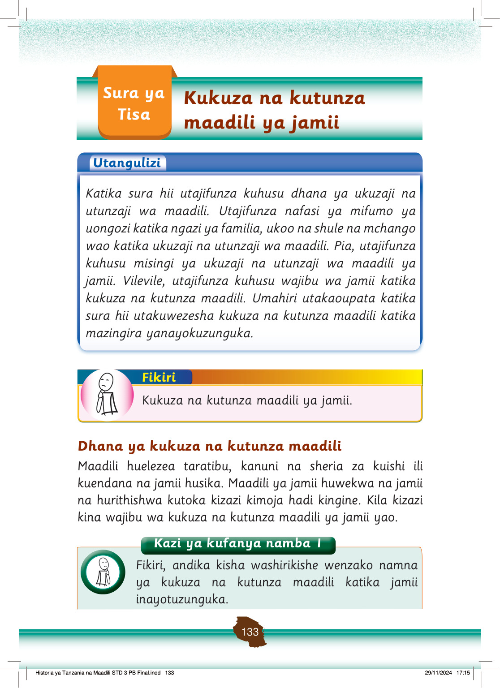

Tunakuza maadili kwa kutenda matendo ya kimaadili.
Matendo ya kukuza maadili hufanyika kwa kuzingatia kanuni, taratibu na sheria za jamii husika.
Tunatunza maadili kwa kusimamia utendekaji wa maadili katika jamii.
Ukuzaji na utunzaji wa maadili ni matendo ya kutenda, kusimamia na kudumisha maadili katika jamii husika.
Zoezi la 1
Soma matendo yaliyoorodheshwa sehemu A, kisha ainisha kwa kuandika matendo ya kimaadili katika sehemu B na yasiyo ya kimaadili katika sehemu C.
A
B
C
Matendo
Matendo ya kimaadili
Matendo yasiyo ya kimaadili
kuwaheshimu watu waliotuzidi umri, kupigana na watu wengine, kuvaa nguo fupi na zinazobana, kuiba, kushirikiana na watu wengine, kutowajali watu wengine, kusema uongo, kuwathamini watu wengine, kusalimiana na wenzako
Historia ya Tanzania na Maadili STD 3 PB Final.indd 134
29/11/2024 17:15
kuwaheshimu watu waliotuzidi umri, kushirikiana na watu wengine, kuwathamini watu wengine, kusalimiana na wenzako
kupigana na watu wengine, kuvaa nguo fupi na zinazobana, kuiba, kutowajali watu wengine, kusema uongo
Kazi ya kufanya namba 2
Andika watu wanaosimamia matendo ya kimaadili nyumbani.
Mfumo wa uongozi katika ukuzaji na utunzaji wa maadili
Familia, ukoo, shule na jamii zina mifumo mbalimbali ya uongozi ya kusimamia ukuzaji na utunzaji wa maadili.